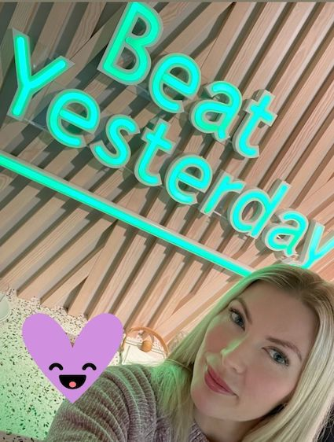

Hello world :)
As a front-end developer student, I find joy in collaborating with people and technology to create beautiful digital experiences.
The process of constantly learning new skills and gaining knowledge through diverse projects is something I find really exciting and rewarding.

Throughout my entire career, I have been passionate about working with people. I been working for many years
as a personal assistant and at an elderly home where I learned the value of empathy, communication, and
teamwork.
I also worked as an E-commerce manager with my own webshop selling clothes and shoes to women. It was at this
time when I developed an deeper interest in web design and e-commerce. This passion led me to pursue a
career in front-end development.
I am now studing my first year of two to become an Front end Developer. At this point of my studies Im
excited to find a company that offers a LIA (Lärande i Arbete) program where I can further hone my skills
and gain practical experience in the industry.
I look forward to working with a team of like-minded individuals who share my passion for learning and creating.